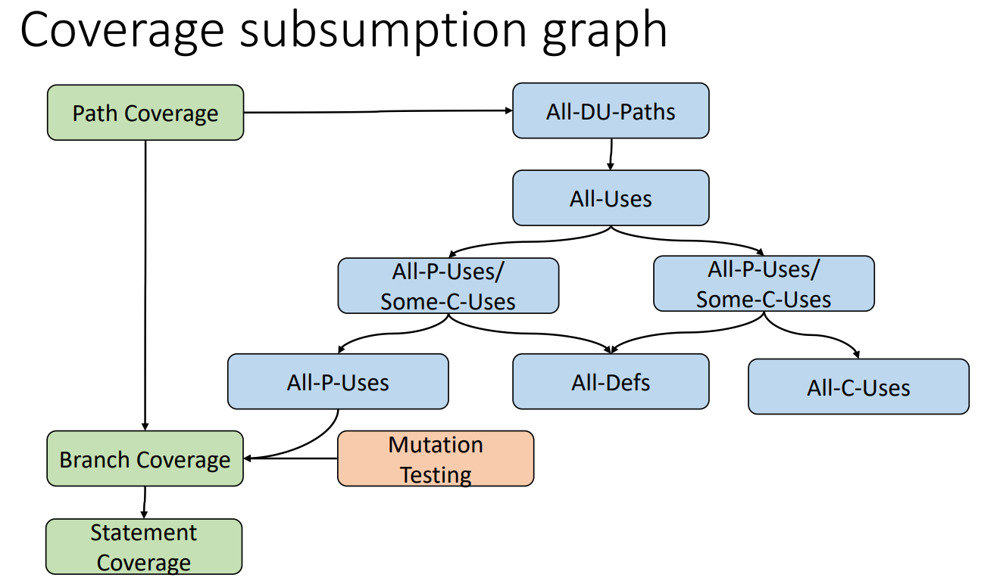
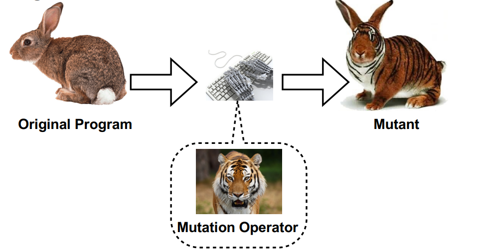
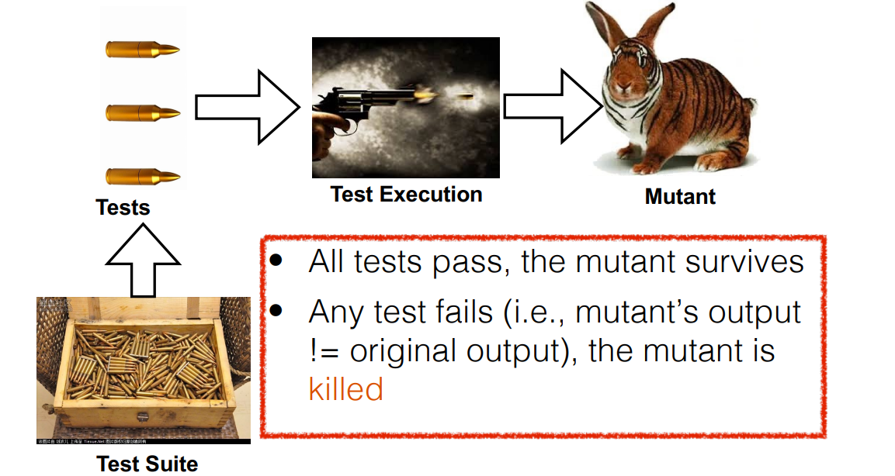
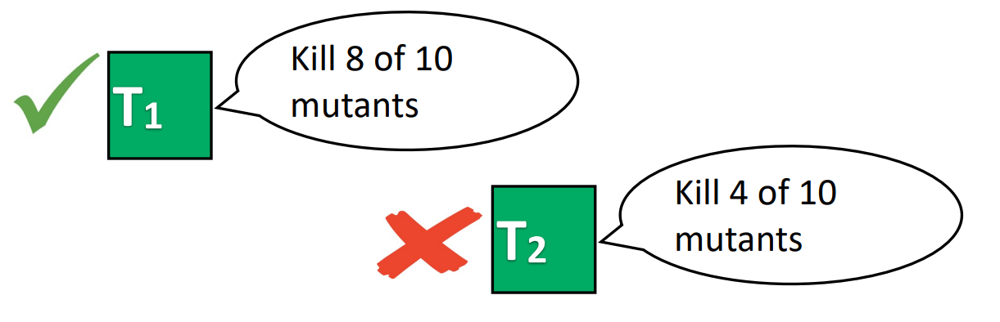
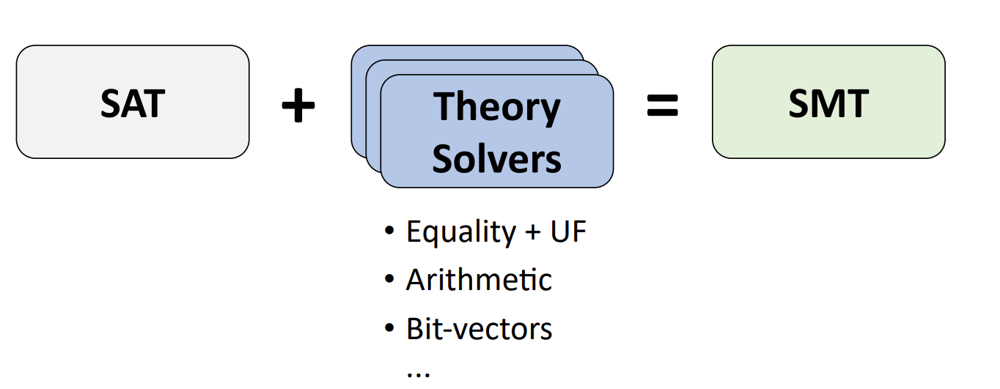

Software Analysis Basics
Background and Basics
Test oracle: a mechanism for determining whether software executed correctly for a test.
Differential test: Provide the same input to similar applications, and observe output differences.
Metamorphic testing: Provide the manipulated inputs to same application, and observe if output differences are as expected.
Program Analysis Basics
Abstract syntax tree(AST): Represents the abstract syntactic structure of a language construct.
Control flow graph(CFG):
- Divide the program into basic blocks.
- Basic blocks: A sequence of straight-line code that can be entered only at the beginning and exited at the end.
- Connect basic blocks together to generate CFG.
Control-flow-based code coverage:
- Statement coverage, Branch coverage, Path coverage.
- Path coverage strictly subsumes branch coverage, branch coverage in turn strictly subsumes statement coverage.
- Path coverage > branch coverage > statement coverage.
Data-flow analysis:
- Live Variables Analysis, Available Expressions Analysis, Very Busy Expressions Analysis.
Data-flow-based code coverage:
DU-pair, DU-path

Program analysis tools:
- Java
- JavaParser: A lightweight source code analysis and manipulation framework.
- Eclipse JDT: A source-level code analysis and manipulation framework.
- ASM: A lightweight bytecode-level analysis and manipulation framework.
- Soot: An Intermediate Representation (IR) level analysis and manipulation framework.
- Wala: An IR-level analysis and manipulation (via Shrike) framework for Java and JavaScript.
- C++
- LLVM: Highly customizable and modular compiler framework
Mutation Testing
Usually, more real bugs detecting means more effective test suite, but real bugs are usually small in number, making it hard to:
- Evaluate test effectiveness comprehensively
- Evaluate test effectiveness in detecting future bugs
So we can create artificial bugs to stimulate real bugs in test effectiveness evaluation, which is called Mutation Testing.
Mutation testing injects changes to statements of programs to generate artificial bugs.
Applies artificial changes based on mutation operators (aka mutators) to generate mutants.

Execute the test suite against each mutant.

Compute the mutation score (e.g., the ratio of killed mutants). The higher the better!

Limitation: Mutation testing is extremely costly, since we need to run the test suite against each mutant
Mutation testing tools
Java
PIT: http://pitest.org/
MAJOR: http://mutation-testing.org/
Javalanche: https://github.com/david-schuler/javalanche/
C
python
C#
- NinjaTurtles: http://ninjaturtles.codeplex.com/
Formal Methods Basics
Boolean satisfiability problem (SAT)
Satisfiability Modulo Theories (SMT)

SMT tools
- Z3
- Supported theories: empty theory, linear arithme-c, nonlinear arithme-c, bitvectors, arrays, datatypes, quan-fiers, strings
- CVC4
- Supported theories: ra-onal and integer linear arithme-c, arrays, tuples, records, induc-ve data types, bitvectors, strings, and equality over uninterpreted func-on symbols
- STP
- Supported theories: bitvectors, arrays
- Boolector
- Supported theories: bitvectors, arrays, and uninterpreted func-ons
Automated Testing
Guided Unit Test Generation
For projects providing a number of public APIs for external use(e.g., JDK lib).
- Method-level test generation: consider various method invocation sequences to expose possible faults.
- [Review] Feedback-directed Random Test Generation
- [Review] Whole Test Suite Generation
Cited from “CS527: Topics in Software Engineering” taught by Lingming Zhang.
Software Analysis Basics